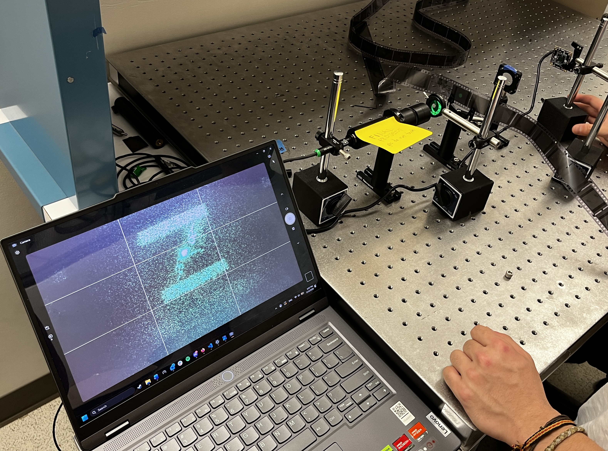
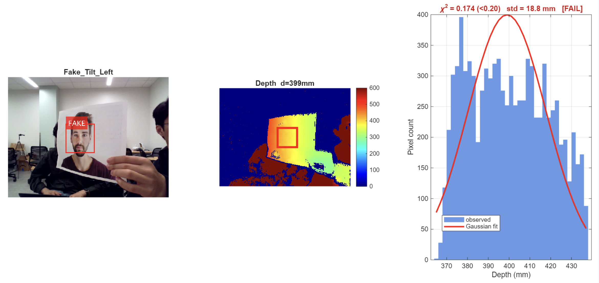
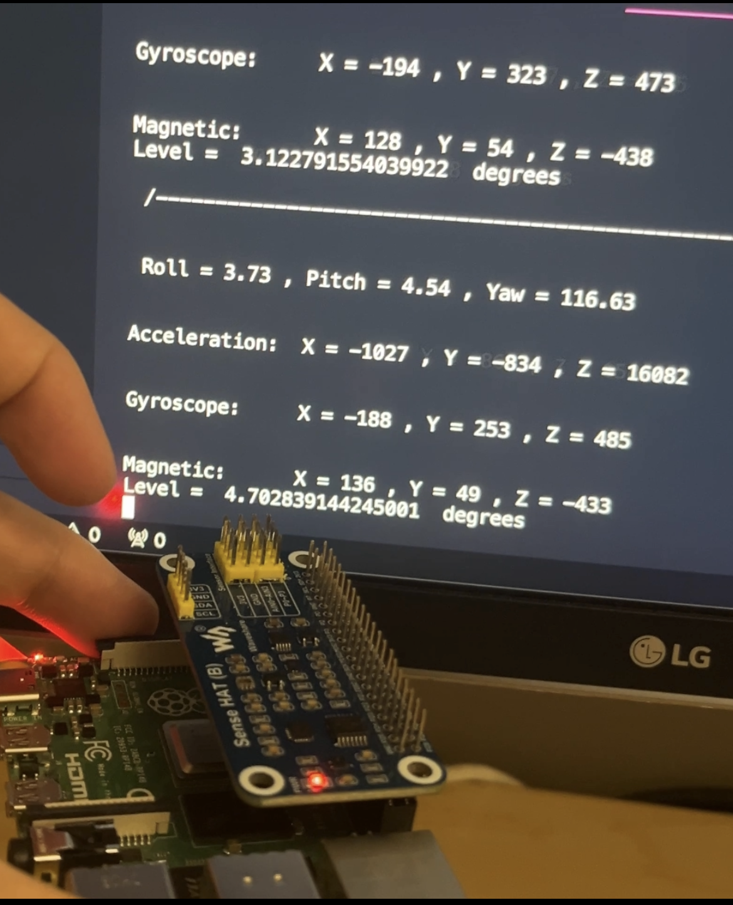
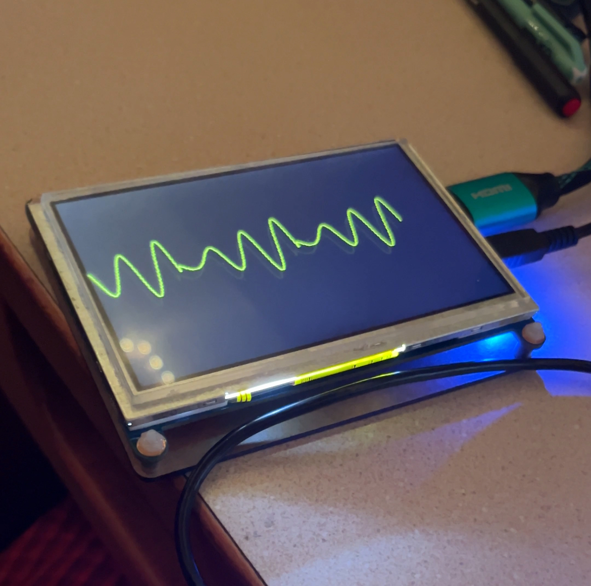

Projects

Programmable Image Projection Using Custom Diffraction Masks
2026 Design Award - Stanford EE Department
Designed an optical system that recreates images from their custom diffraction masks.
Diffraction patterns were generated using diffractsim python libraries, and then captured using an ISO 50 35mm film camera.
The results were then visualized using an optical setup to get the required animation.
Project was a part of EE 134: Introduction to Photonics, Winter 2026.

Face Liveness Detection System using 3D Time of Flight Camera:
EE 219: 3D+ Imaging Sensors
Built a liveness detection system using 3D Time of Flight Camera to distinguish real faces from 2D spoofs. Utilized near/far mode and FoV of the camera to obtain depth information and histogram data to gather insights on face liveness. Final system managed to accurately classify a face as a real 3d face compared to 2d spoofs. Testing was done by rotating faces, distorting the 2d spoofs and changing the lighting conditions.

Capacitive Touch Sensor
Built and calibrated a capacitive touch sensor. Measured the baselines for the drive and sense lines to detect finger presence. Localized finger tracking at 15 fps by detecting the amount of pressure based on autocorrelation values of PRBS sequence readings from the drive lines. Also implemented a Kalman filter for tracking the finger's position for smoother movement detection.

IMU Dead Reckoning
Built a gravity level measurement using Accelerometer and Gyroscope registers (no fusion libraries). Readings from both the accelerometer and the gyroscope were combined to account for drift and impulse changes. Calibrated the sensitivity levels of both to match accuracy in commerical cases (such as those in iPhones). Also applied a Kalman filter for position tracking of target within 6m.

Wavetable Music Synthesizer
Implemented a real-time wavetable audio synthesizer on a PYNQ FPGA using Verilog. Designed a synchronized waveform visualization system using VGA/HDMI output, that displayed the live wave samples in real time. Added additional features such as chords, delays, and adjustable display.

AC to DC Converter
Project involved reading schematics and taking measurements of waveforms using oscilloscopes. I soldered and assembled the circuit on a PCB, and worked on circuit validation using waveform generators, oscilloscopes, and software such as LTspice.